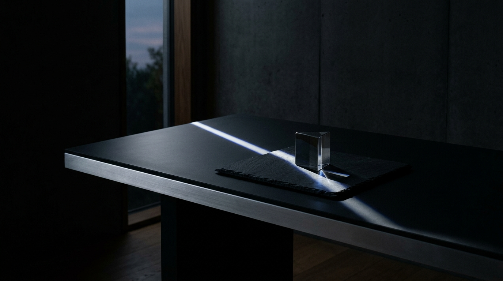
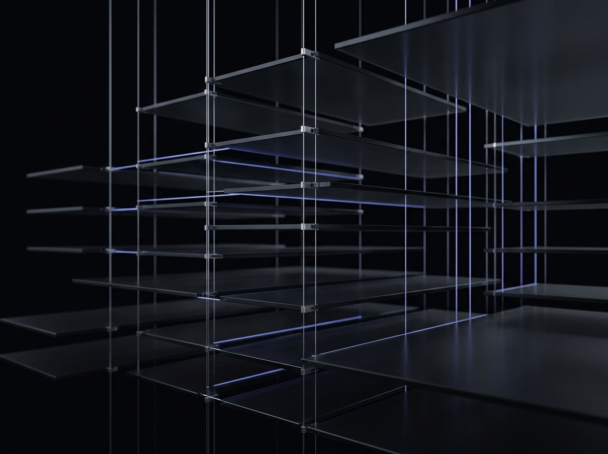
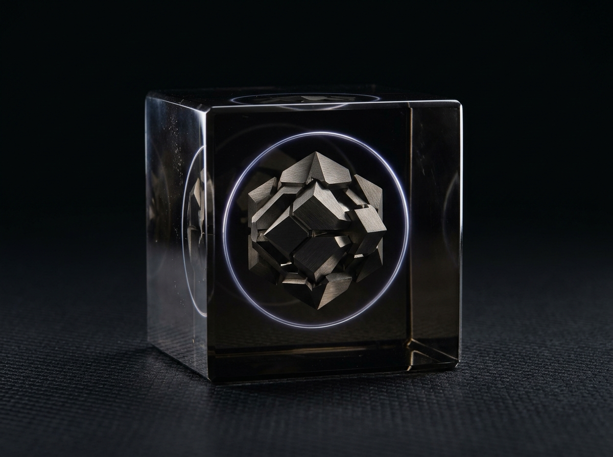

Wake up to a clear morning.
Magnus reads overnight emails, summarizes long threads, and stages replies in your voice — waiting for a single click.
Ask Magnus once. Watch it plan, work across your apps, and slide open the finished result — always waiting for your final say.
Standing by across Gmail, Drive, and Slack.
Nothing sends until you click approve.
Hand off the work that drains your calendar. Magnus handles it across your files, email, and browser — and brings back the finished result.

Magnus reads overnight emails, summarizes long threads, and stages replies in your voice — waiting for a single click.

Drop Magnus into any project. Everyone sees finished decks and updates, while your private drafts stay strictly yours.

Nothing goes out without your approval, your passwords stay unseen, and every finished task comes with proof.
Emails, invites, and important changes wait for your approval before anything is sent.
Magnus gets work done in your apps without ever seeing or storing your passwords.
When Magnus says something is done, it checks the real result and shows you confirmation.
Connect your email, calendar, docs, store, and workspace in seconds.